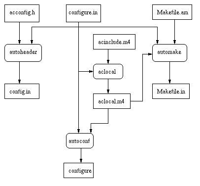
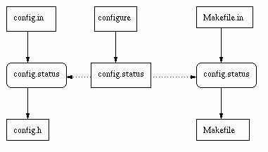

This file documents the GNU configure and build system.
Copyright (C) 1998 Cygnus Solutions.
Permission is granted to make and distribute verbatim copies of this manual provided the copyright notice and this permission notice are preserved on all copies.
Permission is granted to copy and distribute modified versions of this manual under the conditions for verbatim copying, provided that the entire resulting derived work is distributed under the terms of a permission notice identical to this one.
Permission is granted to copy and distribute translations of this manual into another language, under the above conditions for modified versions, except that this permission notice may be stated in a translation approved by the Foundation.
The GNU configure and build system.
This document describes the GNU configure and build systems. It describes how autoconf, automake, libtool, and make fit together. It also includes a discussion of the older Cygnus configure system.
This document does not describe in detail how to use each of the tools; see the respective manuals for that. Instead, it describes which files the developer must write, which files are machine generated and how they are generated, and where certain common problems should be addressed.
This document draws on several sources, including the autoconf manual by David MacKenzie, the automake manual by David MacKenzie and Tom Tromey, the libtool manual by Gordon Matzigkeit, and the Cygnus configure manual by K. Richard Pixley.
The GNU configure and build system has two main goals.
The first is to simplify the development of portable programs. The system permits the developer to concentrate on writing the program, simplifying many details of portability across Unix and even Windows systems, and permitting the developer to describe how to build the program using simple rules rather than complex Makefiles.
The second is to simplify the building of programs distributed as source code. All programs are built using a simple, standardized, two step process. The program builder need not install any special tools in order to build the program.
The GNU configure and build system is comprised of several different tools. Program developers must build and install all of these tools.
People who just want to build programs from distributed sources normally do not need any special tools beyond a Unix shell, a make program, and a C compiler.
Makefile.
This is a very brief and probably inaccurate history.
As the number of Unix variants increased during the 1980s, it became
harder to write programs which could run on all variants. While it was
often possible to use #ifdef to identify particular systems,
developers frequently did not have access to every system, and the
characteristics of some systems changed from version to version.
By 1992, at least three different approaches had been developed:
The Metaconfig program is still used for Perl and a few other programs. It is part of the Dist package. I do not know if it is being developed.
In 1994, David MacKenzie and others modified autoconf to incorporate all the features of Cygnus configure. Since then, there has been a slow but steady conversion of GNU programs from Cygnus configure to autoconf. gcc has been converted, eliminating the gcc configure script.
GNU autoconf was regularly maintained until late 1996. As of this writing in June, 1998, it has no public maintainer.
Most programs are built using the make program, which requires the developer to write Makefiles describing how to build the programs. Since most programs are built in pretty much the same way, this led to a lot of duplication.
The X Window system is built using the imake tool, which uses a database of rules to eliminate the duplication. However, building a tool which was developed using imake requires that the builder have imake installed, violating one of the goals of the GNU system.
The new BSD make provides a standard library of Makefile fragments, which permits developers to write very simple Makefiles. However, this requires that the builder install the new BSD make program.
In 1994, David MacKenzie wrote the first version of automake, which permitted writing a simple build description which was converted into a Makefile which could be used by the standard make program. In 1995, Tom Tromey completely rewrote automake in Perl, and he continues to enhance it.
Various free packages built libraries, and by around 1995 several included support to build shared libraries on various platforms. However, there was no consistent approach. In early 1996, Gordon Matzigkeit began working on libtool, which provided a standardized approach to building shared libraries. This was integrated into automake from the start.
The development of automake and libtool was driven by the GNITS project, a group of GNU maintainers who designed standardized tools to help meet the GNU coding standards.
Most readers of this document should already know how to build a tool by
running configure and make. This section may serve as a
quick introduction or reminder.
Building a tool is normally as simple as running configure
followed by make. You should normally run configure from
an empty directory, using some path to refer to the configure
script in the source directory. The directory in which you run
configure is called the object directory.
In order to use a object directory which is different from the source
directory, you must be using the GNU version of make, which has
the required VPATH support. Despite this restriction, using a
different object directory is highly recommended:
If you don't have GNU make, you will have to run configure
in the source directory. All GNU packages should support this; in
particular, GNU packages should not assume the presence of GNU
make.
After running configure, you can build the tools by running
make.
To install the tools, run make install. Installing the tools
will copy the programs and any required support files to the
installation directory. The location of the installation
directory is controlled by configure options, as described below.
In the Cygnus tree at present, the info files are built and installed as
a separate step. To build them, run make info. To install them,
run make install-info.
All configure scripts support a wide variety of options. The
most interesting ones are --with and --enable options
which are generally specific to particular tools. You can usually use
the --help option to get a list of interesting options for a
particular configure script.
The only generic options you are likely to use are the --prefix
and --exec-prefix options. These options are used to specify the
installation directory.
The directory named by the --prefix option will hold machine
independent files such as info files.
The directory named by the --exec-prefix option, which is
normally a subdirectory of the --prefix directory, will hold
machine dependent files such as executables.
The default for --prefix is /usr/local. The default for
--exec-prefix is the value used for --prefix.
The convention used in Cygnus releases is to use a --prefix
option of /usr/cygnus/release, where release is the
name of the release, and to use a --exec-prefix option of
/usr/cygnus/release/H-host, where host is the
configuration name of the host system (see Configuration Names).
Do not use either the source or the object directory as the installation directory. That will just lead to confusion.
To start using the GNU configure and build system with your software package, you must write three files, and you must run some tools to manually generate additional files.
You must first write the file configure.in. This is an autoconf
input file, and the autoconf manual describes in detail what this file
should look like.
You will write tests in your configure.in file to check for
conditions that may change from one system to another, such as the
presence of particular header files or functions.
For example, not all systems support the gettimeofday function.
If you want to use the gettimeofday function when it is
available, and to use some other function when it is not, you would
check for this by putting AC_CHECK_FUNCS(gettimeofday) in
configure.in.
When the configure script is run at build time, this will arrange to
define the preprocessor macro HAVE_GETTIMEOFDAY to the value 1 if
the gettimeofday function is available, and to not define the
macro at all if the function is not available. Your code can then use
#ifdef to test whether it is safe to call gettimeofday.
If you have an existing body of code, the autoscan program may
help identify potential portability problems, and hence configure tests
that you will want to use.
See the autoscan documentation.
Another handy tool for an existing body of code is ifnames. This
will show you all the preprocessor conditionals that the code already
uses.
See the ifnames documentation.
Besides the portability tests which are specific to your particular
package, every configure.in file should contain the following
macros.
AC_INIT
AC_INIT(foo.c).
AC_PREREQ(VERSION)
autoconf that you are using. This will prevent users from
running an earlier version of autoconf and perhaps getting an
invalid configure script. For example, AC_PREREQ(2.12).
AM_INIT_AUTOMAKE
AM_INIT_AUTOMAKE(foo, 1.0). (This macro is
not needed if you are not using automake).
AM_CONFIG_HEADER
config.h. Your
sources would then use #include "config.h" to include it.
This macro may optionally name the input file for that header file; by
default, this is config.h.in, but that file name works poorly on
DOS filesystems. Therefore, it is often better to name it explicitly as
config.in.
This is what you should normally put in configure.in:
AM_CONFIG_HEADER(config.h:config.in)
(If you are not using automake, use AC_CONFIG_HEADER rather than
AM_CONFIG_HEADER).
AM_MAINTAINER_MODE
If this macro is used, the --enable-maintainer-mode option is
required to enable automatic rebuilding of generated files used by the
configure system. This of course requires that developers be aware of,
and use, that option.
If this macro is not used, then the generated files will always be
rebuilt automatically. This will cause problems if the wrong versions
of autoconf, automake, or others are in the builder's PATH.
(If you are not using automake, you do not need to use this macro).
AC_EXEEXT
AM_EXEEXT always appears in Cygnus configure
files. Other programs may or may not use one of them.
This macro looks for the executable suffix used on the host system. On
Unix systems, this is the empty string. On Windows systems, this is
.exe. This macro directs automake to use the executable suffix
as appropriate when creating programs. This macro does not take any
arguments.
The AC_EXEEXT form is new, and is part of a Cygnus patch to
autoconf to support compiling with Visual C++. Older programs use
AM_EXEEXT instead.
(Programs which do not use automake use neither AC_EXEEXT nor
AM_EXEEXT).
AC_PROG_CC
However, if this configure.in file is for a library which is to
be compiled by a cross compiler which may not fully work, then you will
not want to use AC_PROG_CC. Instead, you will want to use a
variant which does not call the macro AC_PROG_CC_WORKS. Examples
can be found in various configure.in files for libraries that are
compiled with cross compilers, such as libiberty or libgloss. This is
essentially a bug in autoconf, and there will probably be a better
workaround at some point.
AC_PROG_CXX
AC_PROG_CC.
AM_PROG_LIBTOOL
By default, this will cause all libraries to be built as shared
libraries. To prevent this-to change the default-use
AM_DISABLE_SHARED before AM_PROG_LIBTOOL. The configure
options --enable-shared and --disable-shared may be used
to override the default at build time.
AC_DEFINE(_GNU_SOURCE)
_GNU_SOURCE when compiling, which
directs the libc header files to provide the standard GNU system
interfaces including all GNU extensions. If this macro is not defined,
certain GNU extensions may not be available.
AC_OUTPUT
Makefile files
in different directories. If your package lives entirely in a single
directory, you would use simply AC_OUTPUT(Makefile). If you also
have, for example, a lib subdirectory, you would use
AC_OUTPUT(Makefile lib/Makefile).
If you want to use locally defined macros in your configure.in
file, then you will need to write a acinclude.m4 file which
defines them (if not using automake, this file is called
aclocal.m4). Alternatively, you can put separate macros in an
m4 subdirectory, and put ACLOCAL_AMFLAGS = -I m4 in your
Makefile.am file so that the aclocal program will be able
to find them.
The different macro prefixes indicate which tool defines the macro.
Macros which start with AC_ are part of autoconf. Macros which
start with AM_ are provided by automake or libtool.
You must write the file Makefile.am. This is an automake input
file, and the automake manual describes in detail what this file should
look like.
The automake commands in Makefile.am mostly look like variable
assignments in a Makefile. automake recognizes special variable
names, and automatically add make rules to the output as needed.
There will be one Makefile.am file for each directory in your
package. For each directory with subdirectories, the Makefile.am
file should contain the line
SUBDIRS = dir dir ...
where each dir is the name of a subdirectory.
For each Makefile.am, there should be a corresponding
Makefile in the AC_OUTPUT macro in configure.in.
Every Makefile.am written at Cygnus should contain the line
AUTOMAKE_OPTIONS = cygnus
This puts automake into Cygnus mode. See the automake manual for details.
You may to include the version number of automake that you are
using on the AUTOMAKE_OPTIONS line. For example,
AUTOMAKE_OPTIONS = cygnus 1.3
This will prevent users from running an earlier version of
automake and perhaps getting an invalid Makefile.in.
If your package builds a program, then in the directory where that program is built you will normally want a line like
bin_PROGRAMS = program
where program is the name of the program. You will then want a line like
program_SOURCES = file file ...
where each file is the name of a source file to link into the
program (e.g., foo.c).
If your package builds a library, and you do not want the library to ever be built as a shared library, then in the directory where that library is built you will normally want a line like
lib_LIBRARIES = libname.a
where libname.a is the name of the library. You will then
want a line like
libname_a_SOURCES = file file ...
where each file is the name of a source file to add to the library.
If your package builds a library, and you want to permit building the library as a shared library, then in the directory where that library is built you will normally want a line like
lib_LTLIBRARIES = libname.laThe use of
LTLIBRARIES, and the .la extension, indicate a
library to be built using libtool. As usual, you will then want a line
like
libname_la_SOURCES = file file ...
The strings bin and lib that appear above in
bin_PROGRAMS and lib_LIBRARIES are not arbitrary. They
refer to particular directories, which may be set by the --bindir
and --libdir options to configure. If those options are
not used, the default values are based on the --prefix or
--exec-prefix options to configure. It is possible to use
other names if the program or library should be installed in some other
directory.
The Makefile.am file may also contain almost anything that may
appear in a normal Makefile. automake also supports many other
special variables, as well as conditionals.
See the automake manual for more information.
If you are generating a portability header file, (i.e., you are using
AM_CONFIG_HEADER in configure.in), then you will have to
write a acconfig.h file. It will have to contain the following
lines.
/* Name of package. */ #undef PACKAGE /* Version of package. */ #undef VERSION
This requirement is really a bug in the system, and the requirement may be eliminated at some later date.
The acconfig.h file will also similar comment and #undef
lines for any unusual macros in the configure.in file, including
any macro which appears in a AC_DEFINE macro.
In particular, if you are writing a GNU package and therefore include
AC_DEFINE(_GNU_SOURCE) in configure.in as suggested above,
you will need lines like this in acconfig.h:
/* Enable GNU extensions. */ #undef _GNU_SOURCE
Normally the autoheader program will inform you of any such
requirements by printing an error message when it is run. However, if
you do anything particular odd in your configure.in file, you
will have to make sure that the right entries appear in
acconfig.h, since otherwise the results of the tests may not be
available in the config.h file which your code will use.
(Thee PACKAGE and VERSION lines are not required if you
are not using automake, and in that case you may not need a
acconfig.h file at all).
Once you have written configure.in, Makefile.am,
acconfig.h, and possibly acinclude.m4, you must use
autoconf and automake programs to produce the first versions of the
generated files. This is done by executing the following sequence of
commands.
aclocal autoconf autoheader automake
The aclocal and automake commands are part of the automake
package, and the autoconf and autoheader commands are part
of the autoconf package.
If you are using a m4 subdirectory for your macros, you will need
to use the -I m4 option when you run aclocal.
If you are not using the Cygnus tree, use the -a option when
running automake command in order to copy the required support
files into your source directory.
If you are using libtool, you must build and install the libtool package
with the same --prefix and --exec-prefix options as you
used with the autoconf and automake packages. You must do this before
running any of the above commands. If you are not using the Cygnus
tree, you will need to run the libtoolize program to copy the
libtool support files into your directory.
Once you have managed to run these commands without getting any errors,
you should create a new empty directory, and run the configure
script which will have been created by autoconf with the
--enable-maintainer-mode option. This will give you a set of
Makefiles which will include rules to automatically rebuild all the
generated files.
After doing that, whenever you have changed some of the input files and
want to regenerated the other files, go to your object directory and run
make. Doing this is more reliable than trying to rebuild the
files manually, because there are complex order dependencies and it is
easy to forget something.
Let's consider a trivial example.
Suppose we want to write a simple version of touch. Our program,
which we will call poke, will take a single file name argument,
and use the utime system call to set the modification and access
times of the file to the current time. We want this program to be
highly portable.
We'll first see what this looks like without using autoconf and automake, and then see what it looks like with them.
Here is our first try at poke.c. Note that we've written it
without ANSI/ISO C prototypes, since we want it to be highly portable.
#include <stdio.h>
#include <stdlib.h>
#include <sys/types.h>
#include <utime.h>
int
main (argc, argv)
int argc;
char **argv;
{
if (argc != 2)
{
fprintf (stderr, "Usage: poke file\n");
exit (1);
}
if (utime (argv[1], NULL) < 0)
{
perror ("utime");
exit (1);
}
exit (0);
}
We also write a simple Makefile.
CC = gcc CFLAGS = -g -O2 all: poke poke: poke.o $(CC) -o poke $(CFLAGS) $(LDFLAGS) poke.o
So far, so good.
Unfortunately, there are a few problems.
On older Unix systems derived from BSD 4.3, the utime system call
does not accept a second argument of NULL. On those systems, we
need to pass a pointer to struct utimbuf structure.
Unfortunately, even older systems don't define that structure; on those
systems, we need to pass an array of two long values.
The header file stdlib.h was invented by ANSI C, and older
systems don't have a copy. We included it above to get a declaration of
exit.
We can find some of these portability problems by running
autoscan, which will create a configure.scan file which we
can use as a prototype for our configure.in file. I won't show
the output, but it will notice the potential problems with utime
and stdlib.h.
In our Makefile, we don't provide any way to install the program.
This doesn't matter much for such a simple example, but a real program
will need an install target. For that matter, we will also want
a clean target.
Here is our second try at this program.
We modify poke.c to use preprocessor macros to control what
features are available. (I've cheated a bit by using the same macro
names which autoconf will use).
#include <stdio.h>
#ifdef STDC_HEADERS
#include <stdlib.h>
#endif
#include <sys/types.h>
#ifdef HAVE_UTIME_H
#include <utime.h>
#endif
#ifndef HAVE_UTIME_NULL
#include <time.h>
#ifndef HAVE_STRUCT_UTIMBUF
struct utimbuf
{
long actime;
long modtime;
};
#endif
static int
utime_now (file)
char *file;
{
struct utimbuf now;
now.actime = now.modtime = time (NULL);
return utime (file, &now);
}
#define utime(f, p) utime_now (f)
#endif /* HAVE_UTIME_NULL */
int
main (argc, argv)
int argc;
char **argv;
{
if (argc != 2)
{
fprintf (stderr, "Usage: poke file\n");
exit (1);
}
if (utime (argv[1], NULL) < 0)
{
perror ("utime");
exit (1);
}
exit (0);
}
Here is the associated Makefile. We've added support for the
preprocessor flags we use. We've also added install and
clean targets.
# Set this to your installation directory. bindir = /usr/local/bin # Uncomment this if you have the standard ANSI/ISO C header files. # STDC_HDRS = -DSTDC_HEADERS # Uncomment this if you have utime.h. # UTIME_H = -DHAVE_UTIME_H # Uncomment this if utime (FILE, NULL) works on your system. # UTIME_NULL = -DHAVE_UTIME_NULL # Uncomment this if struct utimbuf is defined in utime.h. # UTIMBUF = -DHAVE_STRUCT_UTIMBUF CC = gcc CFLAGS = -g -O2 ALL_CFLAGS = $(STDC_HDRS) $(UTIME_H) $(UTIME_NULL) $(UTIMBUF) $(CFLAGS) all: poke poke: poke.o $(CC) -o poke $(ALL_CFLAGS) $(LDFLAGS) poke.o .c.o: $(CC) -c $(ALL_CFLAGS) poke.c install: poke cp poke $(bindir)/poke clean: rm poke poke.o
Some problems with this approach should be clear.
Users who want to compile poke will have to know how utime works
on their systems, so that they can uncomment the Makefile
correctly.
The installation is done using cp, but many systems have an
install program which may be used, and which supports optional
features such as stripping debugging information out of the installed
binary.
The use of Makefile variables like CC, CFLAGS and
LDFLAGS follows the requirements of the GNU standards. This is
convenient for all packages, since it reduces surprises for users.
However, it is easy to get the details wrong, and wind up with a
slightly nonstandard distribution.
For our third try at this program, we will write a configure.in
script to discover the configuration features on the host system, rather
than requiring the user to edit the Makefile. We will also write
a Makefile.am rather than a Makefile.
The only change to poke.c is to add a line at the start of the
file:
#include "config.h"
The new configure.in file is as follows.
AC_INIT(poke.c) AM_INIT_AUTOMAKE(poke, 1.0) AM_CONFIG_HEADER(config.h:config.in) AC_PROG_CC AC_HEADER_STDC AC_CHECK_HEADERS(utime.h) AC_EGREP_HEADER(utimbuf, utime.h, AC_DEFINE(HAVE_STRUCT_UTIMBUF)) AC_FUNC_UTIME_NULL AC_OUTPUT(Makefile)
The first four macros in this file, and the last one, were described
above; see Write configure.in. If we omit these macros, then when
we run automake we will get a reminder that we need them.
The other macros are standard autoconf macros.
AC_HEADER_STDC
AC_CHECK_HEADERS
AC_EGREP_HEADER
utimbuf in utime.h.
AC_FUNC_UTIME_NULL
utime accepts a NULL second argument to set the
file change time to the current time.
See the autoconf manual for a more complete description.
The new Makefile.am file is as follows. Note how simple this is
compared to our earlier Makefile.
bin_PROGRAMS = poke poke_SOURCES = poke.c
This means that we should build a single program name poke. It
should be installed in the binary directory, which we called
bindir earlier. The program poke is built from the source
file poke.c.
We must also write a acconfig.h file. Besides PACKAGE and
VERSION, which must be mentioned for all packages which use
automake, we must include HAVE_STRUCT_UTIMBUF, since we mentioned
it in an AC_DEFINE.
/* Name of package. */ #undef PACKAGE /* Version of package. */ #undef VERSION /* Whether utime.h defines struct utimbuf. */ #undef HAVE_STRUCT_UTIMBUF
We must now generate the other files, using the following commands.
aclocal autoconf autoheader automake
When we run autoheader, it will remind us of any macros we forgot
to add to acconfig.h.
When we run automake, it will want to add some files to our
distribution. It will add them automatically if we use the
--add-missing option.
By default, automake will run in GNU mode, which means that it
will want us to create certain additional files; as of this writing, it
will want NEWS, README, AUTHORS, and
ChangeLog, all of which are files which should appear in a
standard GNU distribution. We can either add those files, or run
automake with the --foreign option.
Running these tools will generate the following files, all of which are described in the next chapter.
aclocal.m4
configure
config.in
Makefile.in
stamp-h.in
As was seen in the previous chapter, the GNU configure and build system uses a number of different files. The developer must write a few files. The others are generated by various tools.
The system is rather flexible, and can be used in many different ways. In describing the files that it uses, I will describe the common case, and mention some other cases that may arise.
This section describes the files written or generated by the developer of a package.
Here is a picture of the files which are written by the developer, the
generated files which would be included with a complete source
distribution, and the tools which create those files.
The file names are plain text and the tool names are enclosed by
* characters
(e.g., autoheader is the name of a tool, not the name of a file).

The following files would be written by the developer.
configure.in
AC_OUTPUT macro listing which
files to create when the builder runs the configure script. This file
is always required when using the GNU configure system. See Write configure.in.
Makefile.am
Makefile.in directly). See Write Makefile.am.
acconfig.h
AM_CONFIG_HEADER (or, if not using automake,
AC_CONFIG_HEADER), this file is used to describe macros which are
not recognized by the autoheader command. This is normally a
fairly uninteresting file, consisting of a collection of #undef
lines with comments. Normally any call to AC_DEFINE in
configure.in will require a line in this file. See Write acconfig.h.
acinclude.m4
configure.in. If you don't need
any local autoconf macros, then you don't need this file at all. In
fact, in general, you never need local autoconf macros, since you can
put everything in configure.in, but sometimes a local macro is
convenient.
Newer tools may omit acinclude.m4, and instead use a
subdirectory, typically named m4, and define
ACLOCAL_AMFLAGS = -I m4 in Makefile.am to force
aclocal to look there for macro definitions. The macro
definitions are then placed in separate files in that directory.
The acinclude.m4 file is only used when using automake; in older
tools, the developer writes aclocal.m4 directly, if it is needed.
The following files would be generated by the developer.
When using automake, these files are normally not generated manually
after the first time. Instead, the generated Makefile contains
rules to automatically rebuild the files as required. When
AM_MAINTAINER_MODE is used in configure.in (the normal
case in Cygnus code), the automatic rebuilding rules will only be
defined if you configure using the --enable-maintainer-mode
option.
When using automatic rebuilding, it is important to ensure that all the
various tools have been built and installed on your PATH. Using
automatic rebuilding is highly recommended, so much so that I'm not
going to explain what you have to do if you don't use it.
configure
autoconf from configure.in
and aclocal.m4. This is a shell script.
Makefile.in
Makefile at build time. This file is generated by
automake from Makefile.am. If you aren't using automake,
you must write this file yourself. This file is pretty much a normal
Makefile, with some configure substitutions for certain
variables.
aclocal.m4
aclocal program, based on the
contents of configure.in and acinclude.m4 (or, as noted in
the description of acinclude.m4 above, on the contents of an
m4 subdirectory). This file contains definitions of autoconf
macros which autoconf will use when generating the file
configure. These autoconf macros may be defined by you in
acinclude.m4 or they may be defined by other packages such as
automake, libtool or gettext. If you aren't using automake, you will
normally write this file yourself; in that case, if configure.in
uses only standard autoconf macros, this file will not be needed at all.
config.in
autoheader based on acconfig.h and
configure.in. At build time, the configure script will define
some of the macros in it to create config.h, which may then be
included by your program. This permits your C code to use preprocessor
conditionals to change its behaviour based on the characteristics of the
host system. This file may also be called config.h.in.
stamp.h-in
automake. It always contains the string
timestamp. It is used as a timestamp file indicating whether
config.in is up to date. Using a timestamp file means that
config.in can be marked as up to date without actually changing
its modification time. This is useful since config.in depends
upon configure.in, but it is easy to change configure.in
in a way which does not affect config.in.
This section describes the files which are created at configure and build time. These are the files which somebody who builds the package will see.
Of course, the developer will also build the package. The distinction between developer files and build files is not that the developer does not see the build files, but that somebody who only builds the package does not have to worry about the developer files.
Here is a picture of the files which will be created at build time.
config.status is both a created file and a shell script which is
run to create other files, and the picture attempts to show that.

This is a description of the files which are created at build time.
config.status
configure
script. The configure script will create the file
config.status, which is itself a shell script. When you first
run configure, it will automatically run config.status.
An Makefile derived from an automake generated Makefile.in
will contain rules to automatically run config.status again when
necessary to recreate certain files if their inputs change.
Makefile
config.status script will transform Makefile.in into
Makefile.
config.h
config.status script
will transform config.in into config.h.
config.cache
configure script to cache results between runs. This
can be an important speedup. If you modify configure.in in such
a way that the results of old tests should change (perhaps you have
added a new library to LDFLAGS), then you will have to remove
config.cache to force the tests to be rerun.
The autoconf manual explains how to set up a site specific cache file.
This can speed up running configure scripts on your system.
stamp.h
stamp-h.in. It is used as a timestamp file indicating whether
config.h is up to date. This is useful since config.h
depends upon config.status, but it is easy for
config.status to change in a way which does not affect
config.h.
The GNU configure and build system requires several support files to be
included with your distribution. You do not normally need to concern
yourself with these. If you are using the Cygnus tree, most are already
present. Otherwise, they will be installed with your source by
automake (with the --add-missing option) and
libtoolize.
You don't have to put the support files in the top level directory. You
can put them in a subdirectory, and use the AC_CONFIG_AUX_DIR
macro in configure.in to tell automake and the
configure script where they are.
In this section, I describe the support files, so that you can know what they are and why they are there.
ABOUT-NLS
ansi2knr.c
Makefile if you put ansi2knr
in AUTOMAKE_OPTIONS in Makefile.am. This permits
compiling ANSI C code with a K&R C compiler.
ansi2knr.1
ansi2knr.c.
config.guess
config.sub
elisp-comp
install-sh
ltconfig
ltmain.sh
ltconfig to build a library.
mdate-sh
Makefile to pretty
print the modification time of a file. This is used to maintain version
numbers for texinfo files.
missing
Makefile to avoid certain sorts of
timestamp problems.
mkinstalldirs
Makefile
during installation.
texinfo.tex
texi2dvi and TeX.
ylwrap
Makefile to run
programs like bison, yacc, flex, and lex.
These programs default to producing output files with a fixed name, and
the ylwrap script runs them in a subdirectory to avoid file name
conflicts when using a parallel make program.
The GNU configure system names all systems using a configuration name. All such names used to be triplets (they may now contain four parts in certain cases), and the term configuration triplet is still seen.
This is a string of the form cpu-manufacturer-operating_system. In some cases, this is extended to a four part form: cpu-manufacturer-kernel-operating_system.
When using a configuration name in a configure option, it is normally
not necessary to specify an entire name. In particular, the
manufacturer field is often omitted, leading to strings such as
i386-linux or sparc-sunos. The shell script
config.sub will translate these shortened strings into the
canonical form. autoconf will arrange for config.sub to be run
automatically when it is needed.
The fields of a configuration name are as follows:
i386 or
sparc. More specific variants are used as well, such as
mipsel to indicate a little endian MIPS processor.
unknown. Other common strings are
pc for an IBM PC compatible system, or the name of a workstation
vendor, such as sun.
solaris2.5 or irix6.3. There is no
particular restriction on the version number, and strings like
aix4.1.4.0 are seen. For an embedded system, which has no
operating system, this field normally indicates the type of object file
format, such as elf or coff.
i586-pc-linux-gnulibc1. In this case the kernel,
linux, is separated from the operating system, gnulibc1.
The shell script config.guess will normally print the correct
configuration name for the system on which it is run. It does by
running uname and by examining other characteristics of the
system.
Because config.guess can normally determine the configuration
name for a machine, it is normally only necessary to specify a
configuration name when building a cross-compiler or when building using
a cross-compiler.
A configure script will sometimes have to make a decision based on a configuration name. You will need to do this if you have to compile code differently based on something which can not be tested using a standard autoconf feature test.
It is normally better to test for particular features, rather than to test for a particular system. This is because as Unix evolves, different systems copy features from one another. Even if you need to determine whether the feature is supported based on a configuration name, you should define a macro which describes the feature, rather than defining a macro which describes the particular system you are on.
Testing for a particular system is normally done using a case statement
in configure.in. The case statement might look something like
the following, assuming that host is a shell variable holding a
canonical configuration name (which will be the case if
configure.in uses the AC_CANONICAL_HOST or
AC_CANONICAL_SYSTEM macro).
case "${host}" in
i[3456]86-*-linux-gnu*) do something ;;
sparc*-sun-solaris2.[56789]*) do something ;;
sparc*-sun-solaris*) do something ;;
mips*-*-elf*) do something ;;
esac
It is particularly important to use * after the operating system
field, in order to match the version number which will be generated by
config.guess.
In most cases you must be careful to match a range of processor types.
For most processor families, a trailing * suffices, as in
mips* above. For the i386 family, something along the lines of
i[3456]86 suffices at present. For the m68k family, you will
need something like m68*. Of course, if you do not need to match
on the processor, it is simpler to just replace the entire field by a
*, as in *-*-irix*.
The GNU configure and build system can be used to build cross compilation tools. A cross compilation tool is a tool which runs on one system and produces code which runs on another system.
A compiler which produces programs which run on a different system is a cross compilation compiler, or simply a cross compiler. Similarly, we speak of cross assemblers, cross linkers, etc.
In the normal case, a compiler produces code which runs on the same system as the one on which the compiler runs. When it is necessary to distinguish this case from the cross compilation case, such a compiler is called a native compiler. Similarly, we speak of native assemblers, etc.
Although the debugger is not strictly speaking a compilation tool, it is nevertheless meaningful to speak of a cross debugger: a debugger which is used to debug code which runs on another system. Everything that is said below about configuring cross compilation tools applies to the debugger as well.
When building cross compilation tools, there are two different systems involved: the system on which the tools will run, and the system for which the tools generate code.
The system on which the tools will run is called the host system.
The system for which the tools generate code is called the target system.
For example, suppose you have a compiler which runs on a GNU/Linux
system and generates ELF programs for a MIPS embedded system. In this
case the GNU/Linux system is the host, and the MIPS ELF system is the
target. Such a compiler could be called a GNU/Linux cross MIPS ELF
compiler, or, equivalently, a i386-linux-gnu cross
mips-elf compiler.
Naturally, most programs are not cross compilation tools. For those
programs, it does not make sense to speak of a target. It only makes
sense to speak of a target for tools like gcc or the
binutils which actually produce running code. For example, it
does not make sense to speak of the target of a tool like bison
or make.
Most cross compilation tools can also serve as native tools. For a native compilation tool, it is still meaningful to speak of a target. For a native tool, the target is the same as the host. For example, for a GNU/Linux native compiler, the host is GNU/Linux, and the target is also GNU/Linux.
In almost all cases the host system is the system on which you run the
configure script, and on which you build the tools (for the case
when they differ, see Canadian Cross).
If your configure script needs to know the configuration name of the
host system, and the package is not a cross compilation tool and
therefore does not have a target, put AC_CANONICAL_HOST in
configure.in. This macro will arrange to define a few shell
variables when the configure script is run.
host
config.guess shell script, although the
user is permitted to override this by using an explicit --host
option.
host_alias
--host option,
this will be the argument to --host. In the normal case, this
will be the same as the host variable.
host_cpu
host_vendor
host_os
The shell variables may be used by putting shell code in
configure.in. For an example, see Using Configuration Names.
By default, the configure script will assume that the target is
the same as the host. This is the more common case; for example, it
leads to a native compiler rather than a cross compiler.
If you want to build a cross compilation tool, you must specify the
target explicitly by using the --target option when you run
configure. The argument to --target is the configuration
name of the system for which you wish to generate code.
See Configuration Names.
For example, to build tools which generate code for a MIPS ELF embedded
system, you would use --target mips-elf.
When writing configure.in for a cross compilation tool, you will
need to use information about the target. To do this, put
AC_CANONICAL_SYSTEM in configure.in.
AC_CANONICAL_SYSTEM will look for a --target option and
canonicalize it using the config.sub shell script. It will also
run AC_CANONICAL_HOST (see Using the Host Type).
The target type will be recorded in the following shell variables. Note
that the host versions of these variables will also be defined by
AC_CANONICAL_HOST.
target
target_alias
--target option. If the user did not specify
a --target option, this will be the same as host_alias.
target_cpu
target_vendor
target_os
Note that if host and target are the same string, you can
assume a native configuration. If they are different, you can assume a
cross configuration.
It is arguably possible for host and target to represent
the same system, but for the strings to not be identical. For example,
if config.guess returns sparc-sun-sunos4.1.4, and somebody
configures with --target sparc-sun-sunos4.1, then the slight
differences between the two versions of SunOS may be unimportant for
your tool. However, in the general case it can be quite difficult to
determine whether the differences between two configuration names are
significant or not. Therefore, by convention, if the user specifies a
--target option without specifying a --host option, it is
assumed that the user wants to configure a cross compilation tool.
The variables target and target_alias should be handled
differently.
In general, whenever the user may actually see a string,
target_alias should be used. This includes anything which may
appear in the file system, such as a directory name or part of a tool
name. It also includes any tool output, unless it is clearly labelled
as the canonical target configuration name. This permits the user to
use the --target option to specify how the tool will appear to
the outside world.
On the other hand, when checking for characteristics of the target
system, target should be used. This is because a wide variety of
--target options may map into the same canonical configuration
name. You should not attempt to duplicate the canonicalization done by
config.sub in your own code.
By convention, cross tools are installed with a prefix of the argument
used with the --target option, also known as target_alias
(see Using the Target Type). If the user does not use the
--target option, and thus is building a native tool, no prefix is
used.
For example, if gcc is configured with --target mips-elf, then
the installed binary will be named mips-elf-gcc. If gcc is
configured without a --target option, then the installed binary
will be named gcc.
The autoconf macro AC_ARG_PROGRAM will handle this for you. If
you are using automake, no more need be done; the programs will
automatically be installed with the correct prefixes. Otherwise, see
the autoconf documentation for AC_ARG_PROGRAM.
The Cygnus tree is used for various packages including gdb, the GNU binutils, and egcs. It is also, of course, used for Cygnus releases.
In the Cygnus tree, the top level configure script uses the old
Cygnus configure system, not autoconf. The top level Makefile.in
is written to build packages based on what is in the source tree, and
supports building a large number of tools in a single
configure/make step.
The Cygnus tree may be configured with a --target option. The
--target option applies recursively to every subdirectory, and
permits building an entire set of cross tools at once.
The Cygnus tree distinguishes host libraries from target libraries.
Host libraries are built with the compiler used to build the programs
which run on the host, which is called the host compiler. This includes
libraries such as bfd and tcl. These libraries are built
with the host compiler, and are linked into programs like the binutils
or gcc which run on the host.
Target libraries are built with the target compiler. If gcc is present
in the source tree, then the target compiler is the gcc that is built
using the host compiler. Target libraries are libraries such as
newlib and libstdc++. These libraries are not linked into
the host programs, but are instead made available for use with programs
built with the target compiler.
For the rest of this section, assume that gcc is present in the source tree, so that it will be used to build the target libraries.
There is a complication here. The configure process needs to know which
compiler you are going to use to build a tool; otherwise, the feature
tests will not work correctly. The Cygnus tree handles this by not
configuring the target libraries until the target compiler is built. In
order to permit everything to build using a single
configure/make, the configuration of the target libraries
is actually triggered during the make step.
When the target libraries are configured, the --target option is
not used. Instead, the --host option is used with the argument
of the --target option for the overall configuration. If no
--target option was used for the overall configuration, the
--host option will be passed with the output of the
config.guess shell script. Any --build option is passed
down unchanged.
This translation of configuration options is done because since the target libraries are compiled with the target compiler, they are being built in order to run on the target of the overall configuration. By the definition of host, this means that their host system is the same as the target system of the overall configuration.
The same process is used for both a native configuration and a cross configuration. Even when using a native configuration, the target libraries will be configured and built using the newly built compiler. This is particularly important for the C++ libraries, since there is no reason to assume that the C++ compiler used to build the host tools (if there even is one) uses the same ABI as the g++ compiler which will be used to build the target libraries.
There is one difference between a native configuration and a cross
configuration. In a native configuration, the target libraries are
normally configured and built as siblings of the host tools. In a cross
configuration, the target libraries are normally built in a subdirectory
whose name is the argument to --target. This is mainly for
historical reasons.
To summarize, running configure in the Cygnus tree configures all
the host libraries and tools, but does not configure any of the target
libraries. Running make then does the following steps:
The steps need not be done in precisely this order, since they are
actually controlled by Makefile targets.
There are a few things you must know in order to write a configure script for a target library. This is just a quick sketch, and beginners shouldn't worry if they don't follow everything here.
The target libraries are configured and built using a newly built target compiler. There may not be any startup files or libraries for this target compiler. In fact, those files will probably be built as part of some target library, which naturally means that they will not exist when your target library is configured.
This means that the configure script for a target library may not use
any test which requires doing a link. This unfortunately includes many
useful autoconf macros, such as AC_CHECK_FUNCS. autoconf macros
which do a compile but not a link, such as AC_CHECK_HEADERS, may
be used.
This is a severe restriction, but normally not a fatal one, as target libraries can often assume the presence of other target libraries, and thus know which functions will be available.
As of this writing, the autoconf macro AC_PROG_CC does a link to
make sure that the compiler works. This may fail in a target library,
so target libraries must use a different set of macros to locate the
compiler. See the configure.in file in a directory like
libiberty or libgloss for an example.
As noted in the previous section, target libraries are sometimes built
in directories which are siblings to the host tools, and are sometimes
built in a subdirectory. The --with-target-subdir configure
option will be passed when the library is configured. Its value will be
an empty string if the target library is a sibling. Its value will be
the name of the subdirectory if the target library is in a subdirectory.
If the overall build is not a native build (i.e., the overall configure
used the --target option), then the library will be configured
with the --with-cross-host option. The value of this option will
be the host system of the overall build. Recall that the host system of
the library will be the target of the overall build. If the overall
build is a native build, the --with-cross-host option will not be
used.
A library which can be built both standalone and as a target library may
want to install itself into different directories depending upon the
case. When built standalone, or when built native, the library should
be installed in $(libdir). When built as a target library which
is not native, the library should be installed in $(tooldir)/lib.
The --with-cross-host option may be used to distinguish these
cases.
This same test of --with-cross-host may be used to see whether it
is OK to use link tests in the configure script. If the
--with-cross-host option is not used, then the library is being
built either standalone or native, and a link should work.
The top level Makefile in the Cygnus tree defines targets for
every known subdirectory.
For every subdirectory dir which holds a host library or program,
the Makefile target all-dir will build that library
or program.
There are dependencies among host tools. For example, building gcc
requires first building gas, because the gcc build process invokes the
target assembler. These dependencies are reflected in the top level
Makefile.
For every subdirectory dir which holds a target library, the
Makefile target configure-target-dir will configure
that library. The Makefile target all-target-dir
will build that library.
Every configure-target-dir target depends upon
all-gcc, since gcc, the target compiler, is required to configure
the tool. Every all-target-dir target depends upon the
corresponding configure-target-dir target.
There are several other targets which may be of interest for each
directory: install-dir, clean-dir, and
check-dir. There are also corresponding target
versions of these for the target libraries , such as
install-target-dir.
The libiberty subdirectory is currently a special case, in that
it is the only directory which is built both using the host compiler and
using the target compiler.
This is because the files in libiberty are used when building the
host tools, and they are also incorporated into the libstdc++
target library as support code.
This duality does not pose any particular difficulties. It means that
there are targets for both all-libiberty and
all-target-libiberty.
In a native configuration, when target libraries are not built in a subdirectory, the same objects are normally used as both the host build and the target build. This is normally OK, since libiberty contains only C code, and in a native configuration the results of the host compiler and the target compiler are normally interoperable.
Irix 6 is again an exception here, since the SGI native compiler
defaults to using the O32 ABI, and gcc defaults to using the
N32 ABI. On Irix 6, the target libraries are built in a
subdirectory even for a native configuration, avoiding this problem.
There are currently no other libraries built for both the host and the target, but there is no conceptual problem with adding more.
It is possible to use the GNU configure and build system to build a program which will run on a system which is different from the system on which the tools are built. In other words, it is possible to build programs using a cross compiler.
This is referred to as a Canadian Cross.
Here is an example of a Canadian Cross.
While running on a GNU/Linux, you can build a program which will run on a Solaris system. You would use a GNU/Linux cross Solaris compiler to build the program.
Of course, you could not run the resulting program on your GNU/Linux system. You would have to copy it over to a Solaris system before you would run it.
Of course, you could also simply build the programs on the Solaris system in the first place. However, perhaps the Solaris system is not available for some reason; perhaps you actually don't have one, but you want to build the tools for somebody else to use. Or perhaps your GNU/Linux system is much faster than your Solaris system.
A Canadian Cross build is most frequently used when building programs to run on a non-Unix system, such as DOS or Windows. It may be simpler to configure and build on a Unix system than to support the configuration machinery on a non-Unix system.
When building a Canadian Cross, there are at least two different systems involved: the system on which the tools are being built, and the system on which the tools will run.
The system on which the tools are being built is called the build system.
The system on which the tools will run is called the host system.
For example, if you are building a Solaris program on a GNU/Linux system, as in the previous section, the build system would be GNU/Linux, and the host system would be Solaris.
It is, of course, possible to build a cross compiler using a Canadian Cross (i.e., build a cross compiler using a cross compiler). In this case, the system for which the resulting cross compiler generates code is called the target system. (For a more complete discussion of host and target systems, see Host and Target).
An example of building a cross compiler using a Canadian Cross would be building a Windows cross MIPS ELF compiler on a GNU/Linux system. In this case the build system would be GNU/Linux, the host system would be Windows, and the target system would be MIPS ELF.
The name Canadian Cross comes from the case when the build, host, and target systems are all different. At the time that these issues were all being hashed out, Canada had three national political parties.
In order to configure a program for a Canadian Cross build, you must first build and install the set of cross tools you will use to build the program.
These tools will be build cross host tools. That is, they will run on the build system, and will produce code that runs on the host system.
It is easy to confuse the meaning of build and host here. Always remember that the build system is where you are doing the build, and the host system is where the resulting program will run. Therefore, you need a build cross host compiler.
In general, you must have a complete cross environment in order to do the build. This normally means a cross compiler, cross assembler, and so forth, as well as libraries and include files for the host system.
When you run configure, you must use both the --build and
--host options.
The --build option is used to specify the configuration name of
the build system. This can normally be the result of running the
config.guess shell script, and it is reasonable to use
--build=`config.guess`.
The --host option is used to specify the configuration name of
the host system.
As we explained earlier, config.guess is used to set the default
value for the --host option (see Using the Host Type). We
can now see that since config.guess returns the type of system on
which it is run, it really identifies the build system. Since the host
system is normally the same as the build system (i.e., people do not
normally build using a cross compiler), it is reasonable to use the
result of config.guess as the default for the host system when
the --host option is not used.
It might seem that if the --host option were used without the
--build option that the configure script could run
config.guess to determine the build system, and presume a
Canadian Cross if the result of config.guess differed from the
--host option. However, for historical reasons, some configure
scripts are routinely run using an explicit --host option, rather
than using the default from config.guess. As noted earlier, it
is difficult or impossible to reliably compare configuration names
(see Using the Target Type). Therefore, by convention, if the
--host option is used, but the --build option is not used,
then the build system defaults to the host system.
If you are not using the Cygnus tree, you must explicitly specify the
cross tools which you want to use to build the program. This is done by
setting environment variables before running the configure
script.
You must normally set at least the environment variables CC,
AR, and RANLIB to the cross tools which you want to use to
build.
For some programs, you must set additional cross tools as well, such as
AS, LD, or NM.
You would set these environment variables to the build cross tools which you are going to use.
For example, if you are building a Solaris program on a GNU/Linux
system, and your GNU/Linux cross Solaris compiler were named
solaris-gcc, then you would set the environment variable
CC to solaris-gcc.
This section describes configuring and building a Canadian Cross when using the Cygnus tree.
When configuring a Canadian Cross in the Cygnus tree, all the
appropriate environment variables are automatically set to
host-tool, where host is the value used for the
--host option, and tool is the name of the tool (e.g.,
gcc, as, etc.). These tools must be on your PATH.
Adding a prefix of host will give the usual name for the build
cross host tools. To see this, consider that when these cross tools
were built, they were configured to run on the build system and to
produce code for the host system. That is, they were configured with a
--target option that is the same as the system which we are now
calling the host. Recall that the default name for installed cross
tools uses the target system as a prefix (see Using the Target Type). Since that is the system which we are now calling the host,
host is the right prefix to use.
For example, if you configure with --build=i386-linux-gnu and
--host=solaris, then the Cygnus tree will automatically default
to using the compiler solaris-gcc. You must have previously
built and installed this compiler, probably by doing a build with no
--host option and with a --target option of
solaris.
There are additional considerations if you want to build a cross compiler, rather than a native compiler, in the Cygnus tree using a Canadian Cross.
When you build a cross compiler using the Cygnus tree, then the target libraries will normally be built with the newly built target compiler (see Host and Target Libraries). However, this will not work when building with a Canadian Cross. This is because the newly built target compiler will be a program which runs on the host system, and therefore will not be able to run on the build system.
Therefore, when building a cross compiler with the Cygnus tree, you must first install a set of build cross target tools. These tools will be used when building the target libraries.
Note that this is not a requirement of a Canadian Cross in general. For
example, it would be possible to build just the host cross target tools
on the build system, to copy the tools to the host system, and to build
the target libraries on the host system. The requirement for build
cross target tools is imposed by the Cygnus tree, which expects to be
able to build both host programs and target libraries in a single
configure/make step. Because it builds these in a single
step, it expects to be able to build the target libraries on the build
system, which means that it must use a build cross target toolchain.
For example, suppose you want to build a Windows cross MIPS ELF compiler on a GNU/Linux system. You must have previously installed both a GNU/Linux cross Windows compiler and a GNU/Linux cross MIPS ELF compiler.
In order to build the Windows (configuration name i386-cygwin32)
cross MIPS ELF (configure name mips-elf) compiler, you might
execute the following commands (long command lines are broken across
lines with a trailing backslash as a continuation character).
mkdir linux-x-cygwin32 cd linux-x-cygwin32 srcdir/configure --target i386-cygwin32 --prefix=installdir \ --exec-prefix=installdir/H-i386-linux make make install cd .. mkdir linux-x-mips-elf cd linux-x-mips-elf srcdir/configure --target mips-elf --prefix=installdir \ --exec-prefix=installdir/H-i386-linux make make install cd .. mkdir cygwin32-x-mips-elf cd cygwin32-x-mips-elf srcdir/configure --build=i386-linux-gnu --host=i386-cygwin32 \ --target=mips-elf --prefix=wininstalldir \ --exec-prefix=wininstalldir/H-i386-cygwin32 make make install
You would then copy the contents of wininstalldir over to the Windows machine, and run the resulting programs.
If you want to make it possible to build a program you are developing using a Canadian Cross, you must take some care when writing your configure and make rules. Simple cases will normally work correctly. However, it is not hard to write configure and make tests which will fail in a Canadian Cross.
In a configure.in file, after calling AC_PROG_CC, you can
find out whether this is a Canadian Cross configure by examining the
shell variable cross_compiling. In a Canadian Cross, which means
that the compiler is a cross compiler, cross_compiling will be
yes. In a normal configuration, cross_compiling will be
no.
You ordinarily do not need to know the type of the build system in a
configure script. However, if you do need that information, you can get
it by using the macro AC_CANONICAL_SYSTEM, the same macro that is
used to determine the target system. This macro will set the variables
build, build_alias, build_cpu, build_vendor,
and build_os, which correspond to the similar target and
host variables, except that they describe the build system.
When writing tests in configure.in, you must remember that you
want to test the host environment, not the build environment.
Macros like AC_CHECK_FUNCS which use the compiler will test the
host environment. That is because the tests will be done by running the
compiler, which is actually a build cross host compiler. If the
compiler can find the function, that means that the function is present
in the host environment.
Tests like test -f /dev/ptyp0, on the other hand, will test the
build environment. Remember that the configure script is running on the
build system, not the host system. If your configure scripts examines
files, those files will be on the build system. Whatever you determine
based on those files may or may not be the case on the host system.
Most autoconf macros will work correctly for a Canadian Cross. The main
exception is AC_TRY_RUN. This macro tries to compile and run a
test program. This will fail in a Canadian Cross, because the program
will be compiled for the host system, which means that it will not run
on the build system.
The AC_TRY_RUN macro provides an optional argument to tell the
configure script what to do in a Canadian Cross. If that argument is
not present, you will get a warning when you run autoconf:
warning: AC_TRY_RUN called without default to allow cross compiling
This tells you that the resulting configure script will not work
with a Canadian Cross.
In some cases while it may better to perform a test at configure time,
it is also possible to perform the test at run time. In such a case you
can use the cross compiling argument to AC_TRY_RUN to tell your
program that the test could not be performed at configure time.
There are a few other autoconf macros which will not work correctly with
a Canadian Cross: a partial list is AC_FUNC_GETPGRP,
AC_FUNC_SETPGRP, AC_FUNC_SETVBUF_REVERSED, and
AC_SYS_RESTARTABLE_SYSCALLS. The AC_CHECK_SIZEOF macro is
generally not very useful with a Canadian Cross; it permits an optional
argument indicating the default size, but there is no way to know what
the correct default should be.
The main Canadian Cross issue in a Makefile arises when you want
to use a subsidiary program to generate code or data which you will then
include in your real program.
If you compile this subsidiary program using $(CC) in the usual
way, you will not be able to run it. This is because $(CC) will
build a program for the host system, but the program is being built on
the build system.
You must instead use a compiler for the build system, rather than the
host system. In the Cygnus tree, this make variable
$(CC_FOR_BUILD) will hold a compiler for the build system.
Note that you should not include config.h in a file you are
compiling with $(CC_FOR_BUILD). The configure script will
build config.h with information for the host system. However,
you are compiling the file using a compiler for the build system (a
native compiler). Subsidiary programs are normally simple filters which
do no user interaction, and it is normally possible to write them in a
highly portable fashion so that the absence of config.h is not
crucial.
The gcc Makefile.in shows a complex situation in which certain
files, such as rtl.c, must be compiled into both subsidiary
programs run on the build system and into the final program. This
approach may be of interest for advanced build system hackers. Note
that the build system compiler is rather confusingly called
HOST_CC.
The Cygnus configure script predates autoconf. All of its interesting features have been incorporated into autoconf. No new programs should be written to use the Cygnus configure script.
However, the Cygnus configure script is still used in a few places: at the top of the Cygnus tree and in a few target libraries in the Cygnus tree. Until those uses have been replaced with autoconf, some brief notes are appropriate here. This is not complete documentation, but it should be possible to use this as a guide while examining the scripts themselves.
Cygnus configure does not use any generated files; there is no program
corresponding to autoconf. Instead, there is a single shell
script named configure which may be found at the top of the
Cygnus tree. This shell script was written by hand; it was not
generated by autoconf, and it is incorrect, and indeed harmful, to run
autoconf in the top level of a Cygnus tree.
Cygnus configure works in a particular directory by examining the file
configure.in in that directory. That file is broken into four
separate shell scripts.
The first is the contents of configure.in up to a line that
starts with # per-host:. This is the common part.
The second is the rest of configure.in up to a line that starts
with # per-target:. This is the per host part.
The third is the rest of configure.in up to a line that starts
with # post-target:. This is the per target part.
The fourth is the remainder of configure.in. This is the post
target part.
If any of these comment lines are missing, the corresponding shell script is empty.
Cygnus configure will first execute the common part. This must set the
shell variable srctrigger to the name of a source file, to
confirm that Cygnus configure is looking at the right directory. This
may set the shell variables package_makefile_frag and
package_makefile_rules_frag.
Cygnus configure will next set the build and host shell
variables, and execute the per host part. This may set the shell
variable host_makefile_frag.
Cygnus configure will next set the target variable, and execute
the per target part. This may set the shell variable
target_makefile_frag.
Any of these scripts may set the subdirs shell variable. This
variable is a list of subdirectories where a Makefile.in file may
be found. Cygnus configure will automatically look for a
Makefile.in file in the current directory. The subdirs
shell variable is not normally used, and I believe that the only
directory which uses it at present is newlib.
For each Makefile.in, Cygnus configure will automatically create
a Makefile by adding definitions for make variables such
as host and target, and automatically editing the values
of make variables such as prefix if they are present.
Also, if any of the makefile_frag shell variables are set, Cygnus
configure will interpret them as file names relative to either the
working directory or the source directory, and will read the contents of
the file into the generated Makefile. The file contents will be
read in after the first line in Makefile.in which starts with
####.
These Makefile fragments are used to customize behaviour for a
particular host or target. They serve to select particular files to
compile, and to define particular preprocessor macros by providing
values for make variables which are then used during compilation.
Cygnus configure, unlike autoconf, normally does not do feature tests,
and normally requires support to be added manually for each new host.
The Makefile fragment support is similar to the autoconf
AC_SUBST_FILE macro.
After creating each Makefile, the post target script will be run
(i.e., it may be run several times). This script may further customize
the Makefile. When it is run, the shell variable Makefile
will hold the name of the Makefile, including the appropriate
directory component.
Like an autoconf generated configure script, Cygnus configure
will create a file named config.status which, when run, will
automatically recreate the configuration. The config.status file
will simply execute the Cygnus configure script again with the
appropriate arguments.
Any of the parts of configure.in may set the shell variables
files and links. Cygnus configure will set up symlinks
from the names in links to the files named in files. This
is similar to the autoconf AC_LINK_FILES macro.
Finally, any of the parts of configure.in may set the shell
variable configdirs to a set of subdirectories. If it is set,
Cygnus configure will recursively run the configure process in each
subdirectory. If the subdirectory uses Cygnus configure, it will
contain a configure.in file but no configure file, in
which case Cygnus configure will invoke itself recursively. If the
subdirectory has a configure file, Cygnus configure assumes that
it is an autoconf generated configure script, and simply invokes
it directly.
The C++ library configure system, written by Per Bothner, deserves
special mention. It uses Cygnus configure, but it does feature testing
like that done by autoconf generated configure scripts. This
approach is used in the libraries libio, libstdc++, and
libg++.
Most of the Makefile information is written out by the shell
script libio/config.shared. Each configure.in file sets
certain shell variables, and then invokes config.shared to create
two package Makefile fragments. These fragments are then
incorporated into the resulting Makefile by the Cygnus configure
script.
The file _G_config.h is created in the libio object
directory by running the shell script libio/gen-params. This
shell script uses feature tests to define macros and typedefs in
_G_config.h.
For some targets gcc may have different processor requirements depending
upon command line options. An obvious example is the
-msoft-float option supported on several processors. This option
means that the floating point registers are not available, which means
that floating point operations must be done by calling an emulation
subroutine rather than by using machine instructions.
For such options, gcc is often configured to compile target libraries
twice: once with -msoft-float and once without. When gcc
compiles target libraries more than once, the resulting libraries are
called multilibs.
Multilibs are not really part of the GNU configure and build system, but
we discuss them here since they require support in the configure
scripts and Makefiles used for target libraries.
In gcc, multilibs are defined by setting the variable
MULTILIB_OPTIONS in the target Makefile fragment. Several
other MULTILIB variables may also be defined there. See Target Fragment.
If you have built gcc, you can see what multilibs it uses by running it
with the -print-multi-lib option. The output .; means
that no multilibs are used. In general, the output is a sequence of
lines, one per multilib. The first part of each line, up to the
;, is the name of the multilib directory. The second part is a
list of compiler options separated by @ characters.
Multilibs are built in a tree of directories. The top of the tree,
represented by . in the list of multilib directories, is the
default library to use when no special compiler options are used. The
subdirectories of the tree hold versions of the library to use when
particular compiler options are used.
The target libraries in the Cygnus tree are automatically built with multilibs. That means that each library is built multiple times.
This default is set in the top level configure.in file, by adding
--enable-multilib to the list of arguments passed to configure
when it is run for the target libraries (see Host and Target Libraries).
Each target library uses the shell script config-ml.in, written
by Doug Evans, to prepare to build target libraries. This shell script
is invoked after the Makefile has been created by the
configure script. If multilibs are not enabled, it does nothing,
otherwise it modifies the Makefile to support multilibs.
The config-ml.in script makes one copy of the Makefile for
each multilib in the appropriate subdirectory. When configuring in the
source directory (which is not recommended), it will build a symlink
tree of the sources in each subdirectory.
The config-ml.in script sets several variables in the various
Makefiles. The Makefile.in must have definitions for
these variables already; config-ml.in simply changes the existing
values. The Makefile should use default values for these
variables which will do the right thing in the subdirectories.
MULTISRCTOP
config-ml.in will set this to a sequence of ../ strings,
where the number of strings is the number of multilib levels in the
source tree. The default value should be the empty string.
MULTIBUILDTOP
config-ml.in will set this to a sequence of ../ strings,
where the number of strings is number of multilib levels in the object
directory. The default value should be the empty string. This will
differ from MULTISRCTOP when configuring in the source tree
(which is not recommended).
MULTIDIRS
Makefile only, config-ml.in will set this
to the list of multilib subdirectories. The default value should be the
empty string.
MULTISUBDIR
config-ml.in will set this to the installed subdirectory name to
use for this subdirectory, with a leading /. The default value
shold be the empty string.
MULTIDO
MULTICLEAN
Makefile only, config-ml.in will set
these variables to commands to use when doing a recursive make. These
variables should both default to the string true, so that by
default nothing happens.
All references to the parent of the source directory should use the
variable MULTISRCTOP. Instead of writing $(srcdir)/..,
you must write $(srcdir)/$(MULTISRCTOP)...
Similarly, references to the parent of the object directory should use
the variable MULTIBUILDTOP.
In the installation target, the libraries should be installed in the
subdirectory MULTISUBDIR. Instead of installing
$(libdir)/libfoo.a, install
$(libdir)$(MULTISUBDIR)/libfoo.a.
The config-ml.in script also modifies the top level
Makefile to add multi-do and multi-clean targets
which are used when building multilibs.
The default target of the Makefile should include the following
command:
@$(MULTIDO) $(FLAGS_TO_PASS) DO=all multi-do
This assumes that $(FLAGS_TO_PASS) is defined as a set of
variables to pass to a recursive invocation of make. This will
build all the multilibs. Note that the default value of MULTIDO
is true, so by default this command will do nothing. It will
only do something in the top level Makefile if multilibs were
enabled.
The install target of the Makefile should include the
following command:
@$(MULTIDO) $(FLAGS_TO_PASS) DO=install multi-do
In general, any operation, other than clean, which should be performed
on all the multilibs should use a $(MULTIDO) line, setting the
variable DO to the target of each recursive call to make.
The clean targets (clean, mostlyclean, etc.) should
use $(MULTICLEAN). For example, the clean target should
do this:
@$(MULTICLEAN) DO=clean multi-clean
autoconf or automake?
--enable-maintainer-mode option, and let make take care of
it.
autoconf says something about undefined macros.
configure.in which are
not defined by autoconf. You may be using an old version of
autoconf; try building and installing a newer one. Make sure the
newly installled autoconf is first on your PATH. Also,
see the next question.
configure script has stuff like CY_GNU_GETTEXT in it.
configure.in which should
be defined in your aclocal.m4 file, but aren't. This usually
means that aclocal was not able to appropriate definitions of the
macros. Make sure that you have installed all the packages you need.
In particular, make sure that you have installed libtool (this is where
AM_PROG_LIBTOOL is defined) and gettext (this is where
CY_GNU_GETTEXT is defined, at least in the Cygnus version of
gettext).
Makefile has @ characters in it.
Makefile.in without adding the appropriate AC_SUBST call
to your configure script. Or it may just mean that you need to
rebuild Makefile in your build directory. To rebuild
Makefile from Makefile.in, run the shell script
config.status with no arguments. If you need to force
configure to run again, first run config.status --recheck.
These runs are normally done automatically by Makefile targets,
but if your Makefile has gotten messed up you'll need to help
them along.
config.status --recheck and config.status?
Makefile
targets. If you do need to run them, use config.status --recheck
to run the configure script again with the same arguments as the
first time you ran it. Use config.status (with no arguments) to
regenerate all files (Makefile, config.h, etc.) based on
the results of the configure script. The two cases are separate because
it isn't always necessary to regenerate all the files after running
config.status --recheck. The Makefile targets generated
by automake will use the environment variables CONFIG_FILES and
CONFIG_HEADERS to only regenerate files as they are needed.
make target to update the tools?
--build option: Build and Host Options
--host option: Build and Host Options
--target option: Specifying the Target
_GNU_SOURCE: Write configure.in
AC_CANONICAL_HOST: Using the Host Type
AC_CANONICAL_SYSTEM: Using the Target Type
AC_CONFIG_HEADER: Write configure.in
AC_EXEEXT: Write configure.in
AC_INIT: Write configure.in
AC_OUTPUT: Write configure.in
AC_PREREQ: Write configure.in
AC_PROG_CC: Write configure.in
AC_PROG_CXX: Write configure.in
acconfig.h: Written Developer Files
acconfig.h, writing: Write acconfig.h
acinclude.m4: Written Developer Files
aclocal.m4: Generated Developer Files
AM_CONFIG_HEADER: Write configure.in
AM_DISABLE_SHARED: Write configure.in
AM_EXEEXT: Write configure.in
AM_INIT_AUTOMAKE: Write configure.in
AM_MAINTAINER_MODE: Write configure.in
AM_PROG_LIBTOOL: Write configure.in
AM_PROG_LIBTOOL in configure: FAQ
config.cache: Build Files Description
config.h: Build Files Description
config.h.in: Generated Developer Files
config.in: Generated Developer Files
config.status: Build Files Description
config.status --recheck: FAQ
configure: Generated Developer Files
configure.in: Written Developer Files
configure.in, writing: Write configure.in
CY_GNU_GETTEXT in configure: FAQ
HOST_CC: CCross in Make
libg++ configure: Cygnus Configure in C++ Libraries
libio configure: Cygnus Configure in C++ Libraries
libstdc++ configure: Cygnus Configure in C++ Libraries
Makefile: Build Files Description
Makefile, garbage characters: FAQ
Makefile.am: Written Developer Files
Makefile.am, writing: Write Makefile.am
Makefile.in: Generated Developer Files
stamp-h: Build Files Description
stamp-h.in: Generated Developer Files